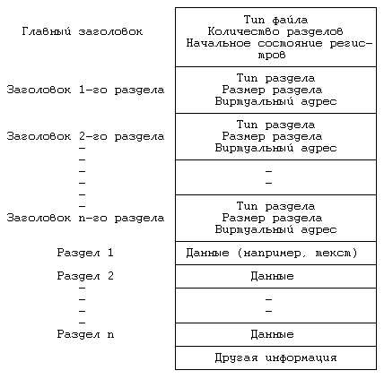
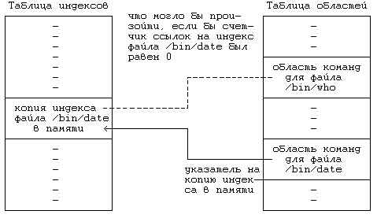

Системная функция exec дает возможность процессу запускать другую программу, при этом соответствующий этой программе исполняемый файл будет располагаться в пространстве памяти процесса. Содержимое пользовательского контекста после вызова функции становится недоступным, за исключением передаваемых функции параметров, которые переписываются ядром из старого адресного пространства в новое. Синтаксис вызова функции:
execve(filename,argv,envp)
где filename - имя исполняемого файла, argv - указатель на массив параметров, которые передаются вызываемой программе, а envp - указатель на массив параметров, составляющих среду выполнения вызываемой программы. Вызов системной функции exec осуществляют несколько библиотечных функций, таких как execl, execv, execle и т.д. В том случае, когда программа использует параметры командной строки
main(argc,argv) ,
массив argv является копией одноименного параметра, передаваемого функции exec. Символьные строки, описывающие среду выполнения вызываемой программы, имеют вид "имя=значение" и содержат полезную для программ информацию, такую как начальный каталог пользователя и путь поиска исполняемых программ. Процессы могут обращаться к параметрам описания среды выполнения, используя глобальную переменную environ, которую заводит начальная процедура Си-интерпретатора.
алгоритм exec
входная информация: (1) имя файла
(2) список параметров
(3) список переменных среды
выходная информация: отсутствует
{
получить индекс файла (алгоритм namei);
проверить, является ли файл исполнимым и имеет ли поль-
зователь право на его исполнение;
прочитать информацию из заголовков файла и проверить,
является ли он загрузочным модулем;
скопировать параметры, переданные функции, из старого
адресного пространства в системное пространство;
для (каждой области, присоединенной к процессу)
отсоединить все старые области (алгоритм detachreg);
для (каждой области, определенной в загрузочном модуле)
{
выделить новые области (алгоритм allocreg);
присоединить области (алгоритм attachreg);
загрузить область в память по готовности (алгоритм
loadreg);
}
скопировать параметры, переданные функции, в новую об-
ласть стека задачи;
специальная обработка для setuid-программ, трассировка;
проинициализировать область сохранения регистров задачи
(в рамках подготовки к возвращению в режим задачи);
освободить индекс файла (алгоритм iput);
}
|
Рисунок 7.19. Алгоритм функции exec
На Рисунке 7.19 представлен алгоритм выполнения системной функции exec. Сначала функция обращается к файлу по алгоритму namei, проверяя, является ли файл исполнимым и отличным от каталога, а также проверяя наличие у пользователя права исполнять программу. Затем ядро, считывая заголовок файла, определяет размещение информации в файле (формат файла).
На Рисунке 7.20 изображен логический формат исполняемого файла в файловой системе, обычно генерируемый транслятором или загрузчиком. Он разбивается на четыре части:
- Главный заголовок, содержащий информацию о том, на сколько разделов делится файл, а также содержащий начальный адрес исполнения процесса и некоторое "магическое число", описывающее тип исполняемого файла.
- Заголовки разделов, содержащие информацию, описывающую каждый раздел в файле: его размер, виртуальные адреса, в которых он располагается, и др.
- Разделы, содержащие собственно "данные" файла (например, текстовые), которые загружаются в адресное пространство процесса.
- Разделы, содержащие смешанную информацию, такую как таблицы идентификаторов и другие данные, используемые в процессе отладки.

Рисунок 7.20. Образ исполняемого файла
Указанные составляющие с развитием самой системы видоизменяются, однако во всех исполняемых файлах обязательно присутствует главный заголовок с полем типа файла.
Тип файла обозначается коротким целым числом (представляется в машине полусловом), которое идентифицирует файл как загрузочный модуль, давая тем самым ядру возможность отслеживать динамические характеристики его выполнения. Например, в машине PDP 11/70 определение типа файла как загрузочного модуля свидетельствует о том, что процесс, исполняющий файл, может использовать до 128 Кбайт памяти вместо 64 Кбайт (**), тем не менее в системах с замещением страниц тип файла все еще играет существенную роль, в чем нам предстоит убедиться во время знакомства с главой 9.
Вернемся к алгоритму. Мы остановились на том, что ядро обратилось к индексу файла и установило, что файл является исполнимым. Ядру следовало бы освободить память, занимаемую пользовательским контекстом процесса. Однако, поскольку в памяти, подлежащей освобождению, располагаются передаваемые новой программе параметры, ядро первым делом копирует их из адресного пространства в промежуточный буфер на время, пока не будут отведены области для нового пространства памяти.
Поскольку параметрами функции exec выступают пользовательские адреса массивов символьных строк, ядро по каждой строке сначала копирует в системную память адрес строки, а затем саму строку. Для хранения строки в разных версиях системы могут быть выбраны различные места. Чаще принято хранить строки в стеке ядра (локальная структура данных, принадлежащая программе ядра), на нераспределяемых участках памяти (таких как страницы), которые можно занимать только временно, а также во внешней памяти (на устройстве выгрузки).
С точки зрения реализации проще всего для копирования параметров в новый пользовательский контекст обратиться к стеку ядра. Однако, поскольку размер стека ядра, как правило, ограничивается системой, а также поскольку параметры функции exec могут иметь произвольную длину, этот подход следует сочетать с другими подходами. При рассмотрении других вариантов обычно останавливаются на способе хранения, обеспечивающем наиболее быстрый доступ к строкам. Если доступ к страницам памяти в системе реализуется довольно просто, строки следует размещать на страницах, поскольку обращение к оперативной памяти осуществляется быстрее, чем к внешней (устройству выгрузки).
После копирования параметров функции exec в системную память ядро отсоединяет области, ранее присоединенные к процессу, используя алгоритм detachreg. Несколько позже мы еще поговорим о специальных действиях, выполняемых в отношении областей команд. К рассматриваемому моменту процесс уже лишен пользовательского контекста и поэтому возникновение в дальнейшем любой ошибки неизбежно будет приводить к завершению процесса по сигналу. Такими ошибками могут быть обращение к пространству, не описанному в таблице областей ядра, попытка загрузить программу, имеющую недопустимо большой размер или использующую области с пересекающимися адресами, и др. Ядро выделяет и присоединяет к процессу области команд и данных, загружает в оперативную память содержимое исполняемого файла (алгоритмы allocreg, attachreg и loadreg, соответственно). Область данных процесса изначально поделена на две части: данные, инициализация которых была выполнена во время компиляции, и данные, не определенные компилятором ("bss"). Область памяти первоначально выделяется для проинициализированных данных. Затем ядро увеличивает размер области данных для размещения данных типа "bss" (алгоритм growreg) и обнуляет их значения. Напоследок ядро выделяет и присоединяет к процессу область стека и отводит пространство памяти для хранения параметров функции exec. Если параметры функции размещаются на страницах, те же страницы могут быть использованы под стек. В противном случае параметры функции размещаются в стеке задачи.
В пространстве процесса ядро стирает адреса пользовательских функций обработки сигналов, поскольку в новом пользовательском контексте они теряют свое значение. Однако и в новом контексте рекомендации по игнорированию тех или иных сигналов остаются в силе. Ядро устанавливает в регистрах для режима задачи значения из сохраненного регистрового контекста, в частности первоначальное значение указателя вершины стека (sp) и счетчика команд (pc): первоначальное значение счетчика команд было занесено загрузчиком в заголовок файла. Для setuid-программ и для трассировки процесса ядро предпринимает особые действия, на которых мы еще остановимся во время рассмотрения глав 8 и 11, соответственно. Наконец, ядро запускает алгоритм iput, освобождая индекс, выделенный по алгоритму namei в самом начале выполнения функции exec. Алгоритмы namei и iput в функции exec выполняют роль, подобную той, которую они выполняют при открытии и закрытии файла; состояние файла во время выполнения функции exec похоже на состояние открытого файла, если не принимать во внимание отсутствие записи о файле в таблице файлов. По выходе из функции процесс исполняет текст новой программы. Тем не менее, процесс остается тем же, что и до выполнения функции; его идентификатор не изменился, как не изменилось и его место в иерархии процессов. Изменению подвергся только пользовательский контекст процесса.
main()
{
int status;
if (fork() == 0)
execl("/bin/date","date",0);
wait(&status);
}
|
Рисунок 7.21. Пример использования функции exec
В качестве примера можно привести программу (Рисунок 7.21), в которой создается процесс-потомок, запускающий функцию exec. Сразу по завершении функции fork процесс-родитель и процесс-потомок начинают исполнять независимо друг от друга копии одной и той же программы. К моменту вызова процессом-потомком функции exec в его области команд находятся инструкции этой программы, в области данных располагаются строки "/bin/date" и "date", а в стеке - записи, которые будут извлечены по выходе из exec. Ядро ищет файл "/bin/date" в файловой системе, обнаружив его, узнает, что его может исполнить любой пользователь, а также то, что он представляет собой загрузочный модуль, готовый для исполнения. По условию первым параметром функции exec, включаемым в список параметров argv, является имя исполняемого файла (последняя компонента имени пути поиска файла). Таким образом, процесс имеет доступ к имени программы на пользовательском уровне, что иногда может оказаться полезным (***). Затем ядро копирует строки "/bin/date" и "date" во внутреннюю структуру хранения и освобождает области команд, данных и стека, занимаемые процессом. Процессу выделяются новые области команд, данных и стека, в область команд переписывается командная секция файла "/bin/date", в область данных - секция данных файла. Ядро восстанавливает первоначальный список параметров (в данном случае это строка символов "date") и помещает его в область стека. Вызвав функцию exec, процесс-потомок прекращает выполнение старой программы и переходит к выполнению программы "date"; когда программа "date" завершится, процесс-родитель, ожидающий этого момента, получит код завершения функции exit.
Вплоть до настоящего момента мы предполагали, что команды и данные размещаются в разных секциях исполняемой программы и, следовательно, в разных областях текущего процесса. Такое размещение имеет два основных преимущества: простота организации защиты от несанкционированного доступа и возможность разделения областей различными процессами. Если бы команды и данные находились в одной области, система не смогла бы предотвратить затирание команд, поскольку ей не были бы известны адреса, по которым они располагаются. Если же команды и данные находятся в разных областях, система имеет возможность пользоваться механизмами аппаратной защиты области команд процесса. Когда процесс случайно попытается что-то записать в область, занятую командами, он получит отказ, порожденный системой защиты и приводящий обычно к аварийному завершению процесса.
#include <signal.h>
main()
{
int i,*ip;
extern f(),sigcatch();
ip = (int *)f; /* присвоение переменной ip значения ад-
реса функции f */
for (i = 0; i < 20; i++)
signal(i,sigcatch);
*ip = 1; /* попытка затереть адрес функции f */
printf("после присвоения значения ip\n");
f();
}
f()
{
}
sigcatch(n)
int n;
{
printf("принят сигнал %d\n",n);
exit(1);
}
|
Рисунок 7.22. Пример программы, ведущей запись в область команд
В качестве примера можно привести программу (Рисунок 7.22), которая присваивает переменной ip значение адреса функции f и затем делает распоряжение принимать все сигналы. Если программа скомпилирована так, что команды и данные располагаются в разных областях, процесс, исполняющий программу, при попытке записать что-то по адресу в ip встретит порожденный системой защиты отказ, поскольку область команд защищена от записи. При работе на компьютере AT&T 3B20 ядро посылает процессу сигнал SIGBUS, в других системах возможна посылка других сигналов. Процесс принимает сигнал и завершается, не дойдя до выполнения команды вывода на печать в процедуре main. Однако, если программа скомпилирована так, что команды и данные располагаются в одной области (в области данных), ядро не поймет, что процесс пытается затереть адрес функции f. Адрес f станет равным 1. Процесс исполнит команду вывода на печать в процедуре main, но когда запустит функцию f, произойдет ошибка, связанная с попыткой выполнения запрещенной команды. Ядро пошлет процессу сигнал SIGILL и процесс завершится.
Расположение команд и данных в разных областях облегчает поиск и предотвращение ошибок адресации. Тем не менее, в ранних версиях системы UNIX команды и данные разрешалось располагать в одной области, поскольку на машинах PDP размер процесса был сильно ограничен: программы имели меньший размер и существенно меньшую сегментацию, если команды и данные занимали одну и ту же область. В последних версиях системы таких строгих ограничений на размер процесса нет и в дальнейшем возможность загрузки команд и данных в одну область компиляторами не будет поддерживаться.
Второе преимущество раздельного хранения команд и данных состоит в возможности совместного использования областей процессами. Если процесс не может вести запись в область команд, команды процесса не претерпевают никаких изменений с того момента, как ядро загрузило их в область команд из командной секции исполняемого файла. Если один и тот же файл исполняется несколькими процессами, в целях экономии памяти они могут иметь одну область команд на всех. Таким образом, когда ядро при выполнении функции exec отводит область под команды процесса, оно проверяет, имеется ли возможность совместного использования процессами команд исполняемого файла, что определяется "магическим числом" в заголовке файла. Если да, то с помощью алгоритма xalloc ядро ищет существующую область с командами файла или назначает новую в случае ее отсутствия (см. Рисунок 7.23).
Исполняя алгоритм xalloc, ядро просматривает список активных областей в поисках области с командами файла, индекс которого совпадает с индексом исполняемого файла. В случае ее отсутствия ядро выделяет новую область (алгоритм allocreg), присоединяет ее к процессу (алгоритм attachreg), загружает ее в память (алгоритм loadreg) и защищает от записи (read-only). Последний шаг предполагает, что при попытке процесса записать что-либо в область команд будет получен отказ, вызванный системой защиты памяти. В случае обнаружения области с командами файла в списке активных областей осуществляется проверка ее наличия в памяти (она может быть либо загружена в память, либо выгружена из памяти) и присоединение ее к процессу. В завершение выполнения алгоритма xalloc ядро снимает с области блокировку, а позднее, следуя алгоритму detachreg при выполнении функций exit или exec, уменьшает значение счетчика областей. В традиционных реализациях системы поддерживается таблица команд, к которой ядро обращается в случаях, подобных описанному. Таким образом, совокупность областей команд можно рассматривать как новую версию этой таблицы.
Напомним, что если область при выполнении алгоритма allocreg (Раздел 6.5.2) выделяется впервые, ядро увеличивает значение счетчика ссылок на индекс, ассоциированный с областью, при этом значение счетчика ссылок нами уже было увеличено в самом начале выполнения функции exec (алгоритм namei). Поскольку ядро уменьшает значение счетчика только один раз в завершение выполнения функции exec (по алгоритму iput), значение счетчика ссылок на индекс файла, ассоциированного с разделяемой областью команд и исполняемого в настоящий момент, равно по меньшей мере 1. Поэтому когда процесс разрывает связь с файлом (функция unlink), содержимое файла остается нетронутым (не претерпевает изменений). После загрузки в память сам файл ядру становится ненужен, ядро интересует только указатель на копию индекса файла в памяти, содержащийся в таблице областей; этот указатель и будет идентифицировать файл, связанный с областью. Если бы значение счетчика ссылок стало равным 0, ядро могло бы передать копию индекса в памяти другому файлу, тем самым делая сомнительным значение указателя на индекс в записи таблицы областей: если бы пользователю пришлось исполнить новый файл, используя функцию exec, ядро по ошибке связало бы его с областью команд старого файла. Эта проблема устраняется благодаря тому, что ядро при выполнении алгоритма allocreg увеличивает значение счетчика ссылок на индекс, предупреждая тем самым переназначение индекса в памяти другому файлу. Когда процесс во время выполнения функций exit или exec отсоединяет область команд, ядро уменьшает значение счетчика ссылок на индекс (по алгоритму freereg), если только связь индекса с областью не помечена как "неотъемлемая".
алгоритм xalloc /* выделение и инициализация области
команд */
входная информация: индекс исполняемого файла
выходная информация: отсутствует
{
если (исполняемый файл не имеет отдельной области команд)
вернуть управление;
если (уже имеется область команд, ассоциированная с ин-
дексом исполняемого файла)
{
/* область команд уже существует ... подключиться к
ней */
заблокировать область;
выполнить пока (содержимое области еще не доступно)
{
/* операции над счетчиком ссылок, предохраняющие
от глобального удаления области
*/
увеличить значение счетчика ссылок на область;
снять с области блокировку;
приостановиться (пока содержимое области не станет
доступным);
заблокировать область;
уменьшить значение счетчика ссылок на область;
}
присоединить область к процессу (алгоритм attachreg);
снять с области блокировку;
вернуть управление;
}
/* интересующая нас область команд не существует -- соз-
дать новую */
выделить область команд (алгоритм allocreg); /* область
заблоки-
рована */
если (область помечена как "неотъемлемая")
отключить соответствующий флаг;
подключить область к виртуальному адресу, указанному в
заголовке файла (алгоритм attachreg);
если (файл имеет специальный формат для системы с замеще-
нием страниц)
/* этот случай будет рассмотрен в главе 9 */
в противном случае /* файл не имеет специального фор-
мата */
считать команды из файла в область (алгоритм
loadreg);
изменить режим защиты области в записи частной таблицы
областей процесса на "read-only";
снять с области блокировку;
}
|
Рисунок 7.23. Алгоритм выделения областей команд

Рисунок 7.24. Взаимосвязь между таблицей индексов и таблицей
областей в случае совместного использования
процессами одной области команд
Рассмотрим в качестве примера ситуацию, приведенную на Рисунке 7.21, где показана взаимосвязь между структурами данных в процессе выполнения функции exec по отношению к файлу "/bin/date" при условии расположения команд и данных файла в разных областях. Когда процесс исполняет файл "/bin/date" первый раз, ядро назначает для команд файла точку входа в таблице областей (Рисунок 7.24) и по завершении выполнения функции exec оставляет счетчик ссылок на индекс равным 1. Когда файл "/bin/date" завершается, ядро запускает алгоритмы detachreg и freereg, сбрасывая значение счетчика ссылок в 0. Однако, если ядро в первом случае не увеличило значение счетчика, оно по завершении функции exec останется равным 0 и индекс на всем протяжении выполнения процесса будет находиться в списке свободных индексов. Предположим, что в это время свободный индекс понадобился процессу, запустившему с помощью функции exec файл "/bin/who", тогда ядро может выделить этому процессу индекс, ранее принадлежавший файлу "/ bin/date". Просматривая таблицу областей в поисках индекса файла "/bin/who", ядро вместо него выбрало бы индекс файла "/bin/date". Считая, что область содержит команды файла "/bin/who", ядро исполнило бы совсем не ту программу. Поэтому значение счетчика ссылок на индекс активного файла, связанного с разделяемой областью команд, должно быть не меньше единицы, чтобы ядро не могло переназначить индекс другому файлу.
Возможность совместного использования различными процессами одних и тех же областей команд позволяет экономить время, затрачиваемое на запуск программы с помощью функции exec. Администраторы системы могут с помощью системной функции (и команды) chmod устанавливать для часто исполняемых файлов режим "sticky-bit", сущность которого заключается в следующем. Когда процесс исполняет файл, для которого установлен режим "sticky-bit", ядро не освобождает область памяти, отведенную под команды файла, отсоединяя область от процесса во время выполнения функций exit или exec, даже если значение счетчика ссылок на индекс становится равным 0. Ядро оставляет область команд в первоначальном виде, при этом значение счетчика ссылок на индекс равно 1, пусть даже область не подключена больше ни к одному из процессов. Если же файл будет еще раз запущен на выполнение (уже другим процессом), ядро в таблице областей обнаружит запись, соответствующую области с командами файла. Процесс затратит на запуск файла меньше времени, так как ему не придется читать команды из файловой системы. Если команды файла все еще находятся в памяти, в их перемещении не будет необходимости; если же команды выгружены во внешнюю память, будет гораздо быстрее загрузить их из внешней памяти, чем из файловой системы (см. об этом в главе 9).
Ядро удаляет из таблицы областей записи, соответствующие областям с командами файла, для которого установлен режим "sticky-bit" (иными словами, когда область помечена как "неотъемлемая" часть файла или процесса), в следующих случаях:
- Если процесс открыл файл для записи, в результате соответствующих операций содержимое файла изменится, при этом будет затронуто и содержимое области.
- Если процесс изменил права доступа к файлу (chmod), отменив режим "sticky-bit", файл не должен оставаться в таблице областей.
- Если процесс разорвал связь с файлом (unlink), он не сможет больше исполнять этот файл, поскольку у файла не будет точки входа в файловую систему; следовательно, и все остальные процессы не будут иметь доступа к записи в таблице областей, соответствующей файлу. Поскольку область с командами файла больше не используется, ядро может освободить ее вместе с остальными ресурсами, занимаемыми файлом.
- Если процесс демонтирует файловую систему, файл перестает быть доступным и ни один из процессов не может его исполнить. В остальном - все как в предыдущем случае.
- Если ядро использовало уже все пространство внешней памяти, отведенное под выгрузку задач, оно пытается освободить часть памяти за счет областей, имеющих пометку "sticky-bit", но не используемых в настоящий момент. Несмотря на то, что эти области могут вскоре понадобиться другим процессам, потребности ядра являются более срочными.
В первых двух случаях область команд с пометкой "sticky-bit" должна быть освобождена, поскольку она больше не отражает текущее состояние файла. В остальных случаях это делается из практических соображений. Конечно же ядро освобождает область только при том условии, что она не используется ни одним из выполняющихся процессов (счетчик ссылок на нее имеет нулевое значение); в противном случае это привело бы к аварийному завершению выполнения системных функций open, unlink и umount (случаи 1, 3 и 4, соответственно).
Если процесс запускает с помощью функции exec самого себя, алгоритм выполнения функции несколько усложняется. По команде sh script командный процессор shell порождает новый процесс (новую ветвь), который инициирует запуск shell'а (с помощью функции exec) и исполняет команды файла "script". Если процесс запускает самого себя и при этом его область команд допускает совместное использование, ядру придется следить за тем, чтобы при обращении ветвей процесса к индексам и областям не возникали взаимные блокировки. Иначе говоря, ядро не может, не снимая блокировки со "старой" области команд, попытаться заблокировать "новую" область, поскольку на самом деле это одна и та же область. Вместо этого ядро просто оставляет "старую" область команд присоединенной к процессу, так как в любом случае ей предстоит повторное использование.
Обычно процессы вызывают функцию exec после функции fork; таким образом, во время выполнения функции fork процесс-потомок копирует адресное пространство своего родителя, но сбрасывает его во время выполнения функции exec и по сравнению с родителем исполняет образ уже другой программы. Не было бы более естественным объединить две системные функции в одну, которая бы загружала программу и исполняла ее под видом нового процесса? Ричи высказал предположение, что возникновение fork и exec как отдельных системных функций обязано тому, что при создании системы UNIX функция fork была добавлена к уже существующему образу ядра системы (см. [Ritchie 84a], стр.1584). Однако, разделение fork и exec важно и с функциональной точки зрения, поскольку в этом случае процессы могут работать с дескрипторами файлов стандартного ввода-вывода независимо, повышая тем самым "элегантность" использования каналов. Пример, показывающий использование этой возможности, приводится в разделе 7.8.
(**) В PDP 11 "магические числа" имеют значения, соответствующие командам перехода; при выполнении этих команд в ранних версиях системы управление передавалось в разные места программы в зависимости от размера заголовка и от типа исполняемого файла. Эта особенность больше не используется с тех пор, как система стала разрабатываться на языке Си.
(***) Например, в версии V стандартные программы переименования файла (mv), копирования файла (cp) и компоновки файла (ln), поскольку исполняют похожие действия, вызывают один и тот же исполняемый файл. По имени вызываемой программы процесс узнает, какие действия в настоящий момент требуются пользователю.
Предыдущая глава || Оглавление || Следующая глава